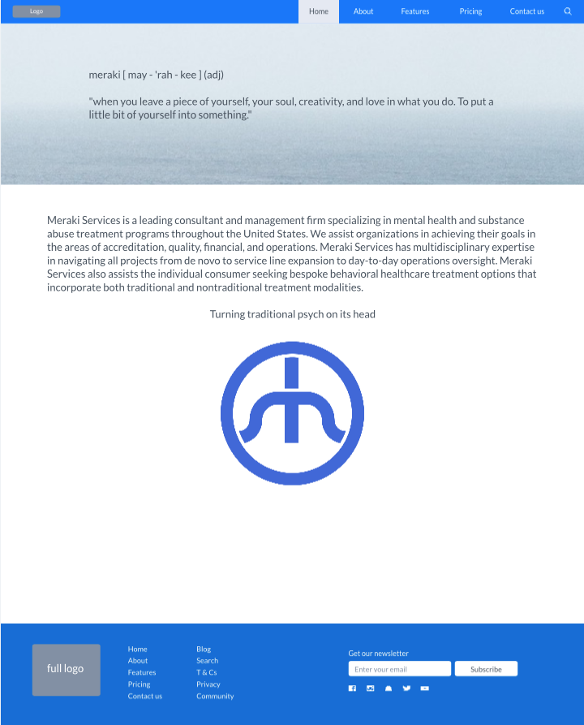

Hey Drew! Hover your mouse on the gray dots. This isn't doable on a phone or tablet - only desktop - phone and tablet would just have to be text. This isn't perfectly positioned, resize your screen until the dots are close to the points of the logo -- just brainstorming. Whaddya think?
Vision - Providing bespoke mental wellness reimagined, safely delivered, and accessible to all.
Mission - To provide widespread individual access to quality behavioral healthcare options that integrate traditional and nontraditional service offerings for optimal outcomes.
Core Value #1 Innovation - We believe the manner in which behavioral healthcare services are delivered should be constantly evolving to meet the needs of all people accessing care.
Confidential, Simple, & Communicative.
Core Value #2 Disruption - We align ourselves with people, organizations and technologies that replace status quo behavioral healthcare delivery models and produces something more impactful and worthwhile.
The Right Solution for the Right Client.
Core Value #3 Bespoken Care - We acknowledge that meeting an individual’s maximum mental wellness cannot be completely anticipated or met in a primary treatment environment; because of this we place equal focus on identifying secondary and tertiary treatment solutions for those seeking our services.
Holistic, Complete, & Multi-facted
